고교회 뉴스
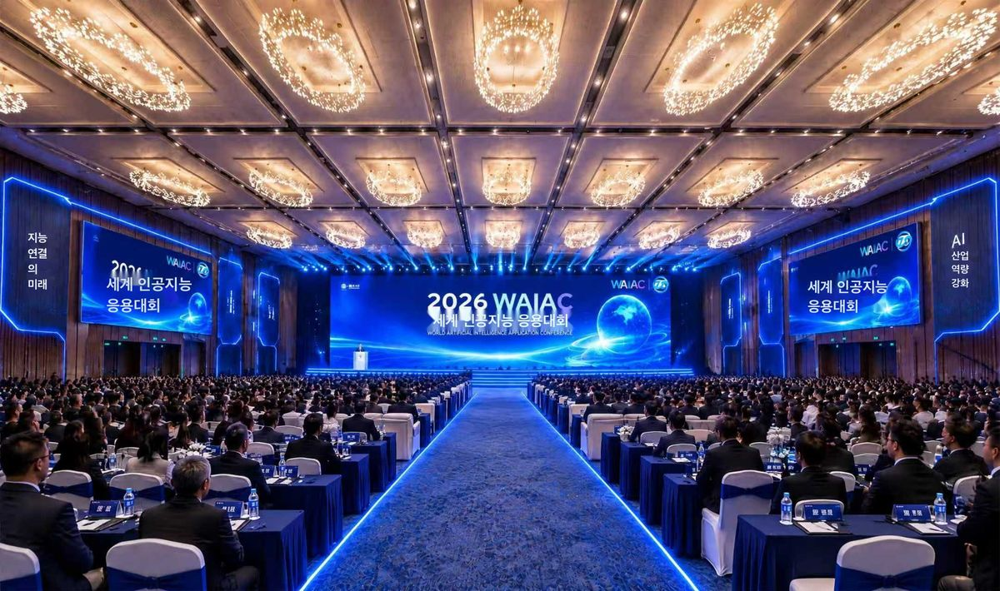
AI 응용이 여는 새 시대: 2026 WAIAC 세계 인공지능 응용대회 곧 개막2026-10-242026 WAIAC 세계 인공지능 응용대회가 11월 26~28일 선전 국제회의전시센터(바오안)에서 열립니다. 세계인공지능기구(WAIO, 미국 워싱턴DC 등록 비영리기구)가 주최합니다…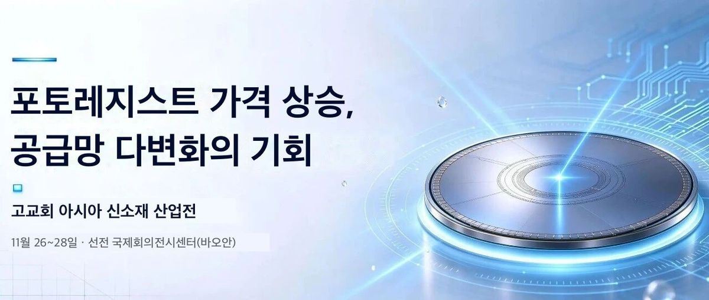
일본산 포토레지스트 가격 상승, 공급망 다변화의 기회: 고교회 아시아 신소재 산업전에서 계약을2026-10-12샘플을 생산라인으로, 주문을 점유율로 바꾸는 일은 결국 현장에서 이뤄집니다. 제28회 고교회 아시아 신소재 산업전(11월 26~28일)이 바로 그 자리입니다. 선전 룽화공항, A1급 일반공항으로 공식 명명, 2027년 말 개항2026-09-23민항 중남지구 관리국의 승인으로 선전 난터우 헬기장을 룽화 장컹징으로 옮긴 뒤의 명칭이 '선전 룽화공항'으로 정해졌습니다. A1급 일반공항으로 2027년 말 개항 예정입니다…
선전 룽화공항, A1급 일반공항으로 공식 명명, 2027년 말 개항2026-09-23민항 중남지구 관리국의 승인으로 선전 난터우 헬기장을 룽화 장컹징으로 옮긴 뒤의 명칭이 '선전 룽화공항'으로 정해졌습니다. A1급 일반공항으로 2027년 말 개항 예정입니다…
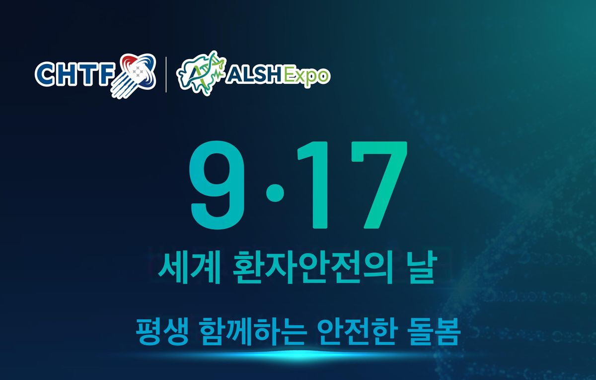
9.17 세계 환자안전의 날: 고교회 생명과학전, 신기술로 환자 안전을 지키다2026-09-179월 17일은 세계 환자안전의 날입니다. 2026년 WHO는 비감염성 질환 환자의 안전한 진료를 주제로 '평생 함께하는 안전한 돌봄'을 내걸었습니다…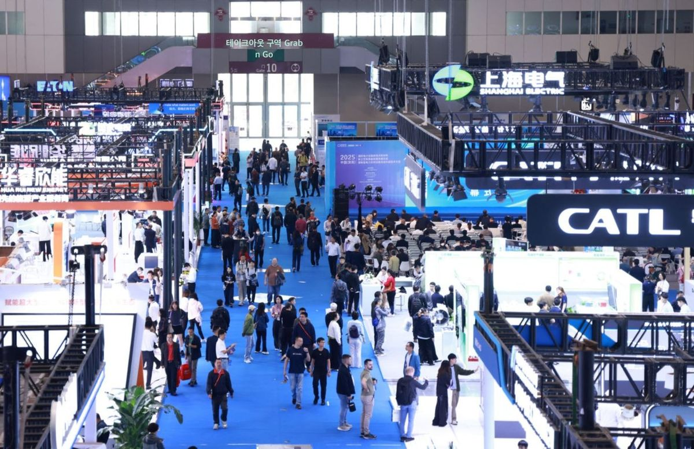
'6대 네트워크' 전략 기회: 고교회 아시아 신형 전력·송배전전이 선전 초대도시 전력망 건설을 돕다2026-07-29녹색 발전은 고품질 발전의 바탕이자 선전 전력·에너지 산업의 전환 방향입니다. 14차 5개년 계획 이후 선전은 신형 에너지 체계와 디지털 에너지 선도도시 구축에서 뚜렷한 성과를 냈습니다… 반다이 다마고치에서 AI 반려 완구까지, 전자 펫 30년의 진화2026-07-28다마고치는 일본어 '다마고(알)'와 '워치(시계)'에서 온 이름으로, 시계 속에서 부화하는 디지털 생명입니다. 1996년 일본 반다이가 내놓았습니다…
반다이 다마고치에서 AI 반려 완구까지, 전자 펫 30년의 진화2026-07-28다마고치는 일본어 '다마고(알)'와 '워치(시계)'에서 온 이름으로, 시계 속에서 부화하는 디지털 생명입니다. 1996년 일본 반다이가 내놓았습니다…
 D-10! 충전기 3C 강제 인증 8월 1일 시행2026-07-232026년 8월 1일부터 CCC 인증서와 인증 표시가 없는 제품은 출고, 판매, 수입, 기타 경영 활동에 사용할 수 없습니다.
D-10! 충전기 3C 강제 인증 8월 1일 시행2026-07-232026년 8월 1일부터 CCC 인증서와 인증 표시가 없는 제품은 출고, 판매, 수입, 기타 경영 활동에 사용할 수 없습니다.
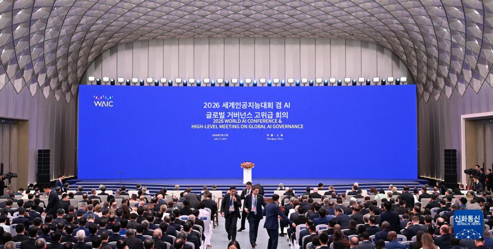
글로벌 AI의 '중국의 순간': 세계인공지능협력기구 출범, 이번 주 정책·산업 동향의 신호는?2026-07-21세계인공지능협력기구 출범과 《인공지능 협력발전 행동계획》 발표, 중국의 칩 생산량 증가, 에이전트 네트워크와 체화지능의 돌파까지 AI 산업이 뚜렷한 신호를 보냈습니다… '고립'에서 '소통'으로: 구조 속도를 다시 쓰는 드론2026-07-15홍수로 길이 끊기고 통신이 두절된 채 골든타임이 흐를 때 누가 가장 먼저 도착할까요? 답은 '사람'에서 '드론'으로 바뀌고 있습니다. 2026년 7월 태풍 메이사크가 광시를 덮쳤습니다…
'고립'에서 '소통'으로: 구조 속도를 다시 쓰는 드론2026-07-15홍수로 길이 끊기고 통신이 두절된 채 골든타임이 흐를 때 누가 가장 먼저 도착할까요? 답은 '사람'에서 '드론'으로 바뀌고 있습니다. 2026년 7월 태풍 메이사크가 광시를 덮쳤습니다…
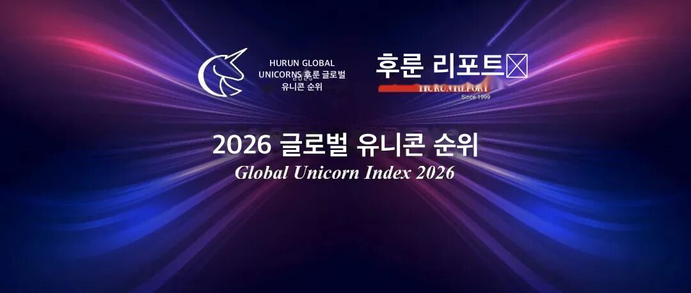
2026 글로벌 유니콘 순위 발표: 중국이 3분의 2, DJI 뒤를 쫓는 기업은?2026-06-30후룬연구원의 《2026 글로벌 유니콘 순위》에 따르면 유니콘은 1,603곳, 총가치는 54조 위안입니다. 저고도 경제 분야는 12곳(약 4,638억 위안)이며 그중 중국이 8곳(약 3,300억 위안)입니다… 하계 다보스가 주목한 '로봇 밸리': 선전은 어떻게 세계 로봇 혁신의 진원지가 됐나2026-06-30올해 하계 다보스 개막식에서 리창 총리는 중국의 혁신 생태계와 신질 생산력을 설명하며 선전 '로봇 밸리'의 30분 산업 지원권을 대표 사례로 언급했습니다…
하계 다보스가 주목한 '로봇 밸리': 선전은 어떻게 세계 로봇 혁신의 진원지가 됐나2026-06-30올해 하계 다보스 개막식에서 리창 총리는 중국의 혁신 생태계와 신질 생산력을 설명하며 선전 '로봇 밸리'의 30분 산업 지원권을 대표 사례로 언급했습니다…
 베이징 상업우주전 열기, 고교회 아시아 우주전이 조 단위 시장을 움직인다2026-06-18기후 변화와 기술 혁명 속에서 우주 탐사가 세계 산업 구도를 바꾸는 힘이 되고 있습니다. '우주 강국' 전략이 15차 5개년 계획에 포함되고 상업 우주는 2년 연속 정부 업무보고에 올랐습니다…
베이징 상업우주전 열기, 고교회 아시아 우주전이 조 단위 시장을 움직인다2026-06-18기후 변화와 기술 혁명 속에서 우주 탐사가 세계 산업 구도를 바꾸는 힘이 되고 있습니다. '우주 강국' 전략이 15차 5개년 계획에 포함되고 상업 우주는 2년 연속 정부 업무보고에 올랐습니다…
 리젠 2호 첫 비행과 IPO 접수: 중커위항, '상업우주 1호 상장주' 도전2026-06-182026년 3월 말 중커위항이 두 이정표를 세웠습니다. 3월 30일 리젠 2호 1호기가 주취안 둥펑 상업우주 시험구에서 첫 비행에 성공했고, 3월 31일 상하이증권거래소가 상장 신청을 접수했습니다…
리젠 2호 첫 비행과 IPO 접수: 중커위항, '상업우주 1호 상장주' 도전2026-06-182026년 3월 말 중커위항이 두 이정표를 세웠습니다. 3월 30일 리젠 2호 1호기가 주취안 둥펑 상업우주 시험구에서 첫 비행에 성공했고, 3월 31일 상하이증권거래소가 상장 신청을 접수했습니다…
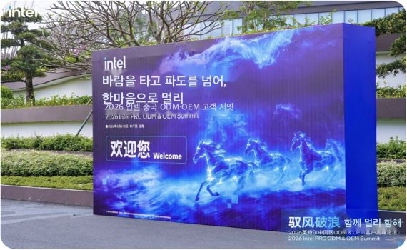
인텔 베이하이 서밋, 생태계 협력으로 중국 제조의 온디바이스 AI 고도화2026-06-184월 8~10일 2026 인텔 중국 ODM·OEM 고객 서밋이 광시 베이하이에서 열렸습니다. 글로벌 바이어와 국내 주요 제조사가 온디바이스 AI와 연산 기술을 논의했습니다… 세금 환급 축소에도 수출 증가, 선전 ESS 해외 진출 가속2026-06-18글로벌 에너지 전환 속에서 선전 ESS 기업은 제품 수출을 넘어 생산능력, 기술, 브랜드, 서비스까지 해외로 내보내는 전략 전환을 하고 있습니다…
세금 환급 축소에도 수출 증가, 선전 ESS 해외 진출 가속2026-06-18글로벌 에너지 전환 속에서 선전 ESS 기업은 제품 수출을 넘어 생산능력, 기술, 브랜드, 서비스까지 해외로 내보내는 전략 전환을 하고 있습니다…
 15차 5개년 계획과 나란히: PUE 규제 강화와 액체냉각 필수화, AI 연산의 새 시장2026-06-15'동수서산'과 탄소중립 정책에 맞춰 제28회 고교회는 핵심 전문전 '아시아 AI 컴퓨팅·데이터센터전'을 마련했습니다…
15차 5개년 계획과 나란히: PUE 규제 강화와 액체냉각 필수화, AI 연산의 새 시장2026-06-15'동수서산'과 탄소중립 정책에 맞춰 제28회 고교회는 핵심 전문전 '아시아 AI 컴퓨팅·데이터센터전'을 마련했습니다…
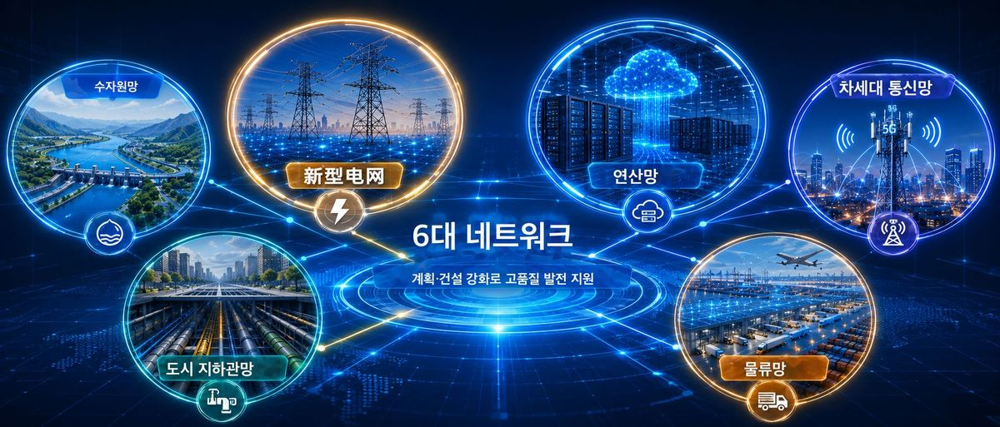
7조 위안 인프라 물결: '6대 네트워크'가 바꾸는 ESS 구도, 고교회에서 기회를 찾다2026-06-102026년 4월 중앙정치국 회의가 '6대 네트워크'를 처음 최고 계획에 넣어 수자원망, 신형 전력망, 연산망, 차세대 통신망, 도시 지하관망, 물류망 건설을 강화하기로 했습니다. 8월 1일, 충전기 업계 '인증 의무' 시대 개막2026-06-082026년 8월 1일부터 CCC 인증서와 인증 표시가 없는 전기차 충전 설비는 출고, 판매, 수입, 기타 경영 활동에 사용할 수 없습니다.
8월 1일, 충전기 업계 '인증 의무' 시대 개막2026-06-082026년 8월 1일부터 CCC 인증서와 인증 표시가 없는 전기차 충전 설비는 출고, 판매, 수입, 기타 경영 활동에 사용할 수 없습니다.
 2026 북중미 월드컵, AI 시대 첫 월드컵: 그라운드의 미래를 설계하는 중국 기술 대기업2026-06-05경기장에서 화면까지, 판정에서 관람까지 AI가 100년 역사의 대회를 바꾸고 있습니다. 이 기술 축제에서 중국 소비자 전자 대기업들이 가장 눈에 띄는 자리를 차지했습니다.
2026 북중미 월드컵, AI 시대 첫 월드컵: 그라운드의 미래를 설계하는 중국 기술 대기업2026-06-05경기장에서 화면까지, 판정에서 관람까지 AI가 100년 역사의 대회를 바꾸고 있습니다. 이 기술 축제에서 중국 소비자 전자 대기업들이 가장 눈에 띄는 자리를 차지했습니다.
 젠슨 황과 유니트리의 만남: 중국 로봇 산업에 찾아온 '안드로이드 모먼트'2026-06-03엔비디아 최신 발표회에서 젠슨 황 CEO는 유니트리와 함께 차세대 휴머노이드 참조 설계 H2+(Isaac GR00T 시스템)를 내놓는다고 밝혔습니다. 같은 날 유니트리의 커촹반 IPO 신청은 상장위원회 심사를 통과했습니다…
젠슨 황과 유니트리의 만남: 중국 로봇 산업에 찾아온 '안드로이드 모먼트'2026-06-03엔비디아 최신 발표회에서 젠슨 황 CEO는 유니트리와 함께 차세대 휴머노이드 참조 설계 H2+(Isaac GR00T 시스템)를 내놓는다고 밝혔습니다. 같은 날 유니트리의 커촹반 IPO 신청은 상장위원회 심사를 통과했습니다…
 저고도 경제의 '시골 방문기': 현과 장강, 깊은 산에서 본 미래2026-06-01논밭에서 협곡까지, 황금 수로에서 응급 항로까지, 저고도 경제는 더 이상 대도시만의 것이 아니며 현 단위의 생산과 생활 방식을 실제로 바꾸고 있습니다.
저고도 경제의 '시골 방문기': 현과 장강, 깊은 산에서 본 미래2026-06-01논밭에서 협곡까지, 황금 수로에서 응급 항로까지, 저고도 경제는 더 이상 대도시만의 것이 아니며 현 단위의 생산과 생활 방식을 실제로 바꾸고 있습니다.
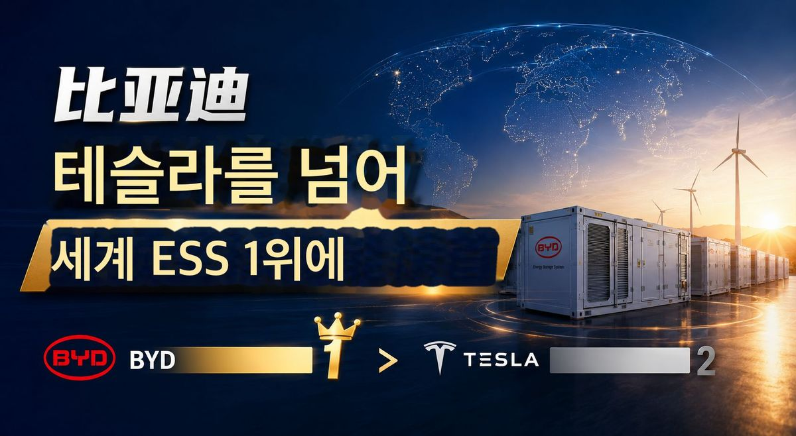
BYD, 테슬라 제치고 세계 ESS 1위2026-05-29BYD가 테슬라를 넘어 세계 최대 배터리 에너지저장시스템(BESS) 통합사가 됐습니다. 세계 점유율은 BYD 13%, 테슬라 10%입니다. 1위 42,653% 급증: 휴머노이드 로봇 1분기 실적 톱10 공개, 산업은 성과 실현 가속 단계로2026-05-27산업체인 여러 기업이 시장 예상을 크게 웃도는 실적을 냈습니다. 일부는 순이익이 전년 대비 10배 이상 늘었고 최고 증가율은 42,653%에 달합니다. 감속기, 서보 시스템, 센서, 액추에이터부터 완제품과 제어 플랫폼까지…
1위 42,653% 급증: 휴머노이드 로봇 1분기 실적 톱10 공개, 산업은 성과 실현 가속 단계로2026-05-27산업체인 여러 기업이 시장 예상을 크게 웃도는 실적을 냈습니다. 일부는 순이익이 전년 대비 10배 이상 늘었고 최고 증가율은 42,653%에 달합니다. 감속기, 서보 시스템, 센서, 액추에이터부터 완제품과 제어 플랫폼까지…
 '인간 증강' 외골격의 인기: 90년대생 공학도가 만든 세계 판매 1위 소비자용 외골격2026-05-22의료기기였던 외골격이 소비자 전자제품으로 바뀌고 있습니다. 스마트폰이 통신, 컴퓨팅, 센서를 통합했듯 외골격은 동력, AI, 인간-기계 상호작용을 통합하며 향후 10년의 중요한 개인 컴퓨팅 플랫폼이 될 것으로…
'인간 증강' 외골격의 인기: 90년대생 공학도가 만든 세계 판매 1위 소비자용 외골격2026-05-22의료기기였던 외골격이 소비자 전자제품으로 바뀌고 있습니다. 스마트폰이 통신, 컴퓨팅, 센서를 통합했듯 외골격은 동력, AI, 인간-기계 상호작용을 통합하며 향후 10년의 중요한 개인 컴퓨팅 플랫폼이 될 것으로…
 선전 전역 저고도 규제 완화: 120m 이하 드론 비행 자유로워져2026-05-20민간 무인항공기 종합관리 플랫폼(UOM)이 전국 새 무인항공기 비행 적합 공역의 전면 시행을 공식 통지했습니다.
선전 전역 저고도 규제 완화: 120m 이하 드론 비행 자유로워져2026-05-20민간 무인항공기 종합관리 플랫폼(UOM)이 전국 새 무인항공기 비행 적합 공역의 전면 시행을 공식 통지했습니다.
 트럼프 방중: 동행 미국 기업의 중국 ESS 사업에 주목2026-05-185월 14일 트럼프 대통령의 방중에 화려한 미국 경제사절단이 동행했습니다. 기술과 무역에 시선이 쏠렸지만, 명단 속 대기업들이 중국 ESS 시장에 각기 다른 규모로 진출해 있다는 점은 잘 알려지지 않았습니다.
트럼프 방중: 동행 미국 기업의 중국 ESS 사업에 주목2026-05-185월 14일 트럼프 대통령의 방중에 화려한 미국 경제사절단이 동행했습니다. 기술과 무역에 시선이 쏠렸지만, 명단 속 대기업들이 중국 ESS 시장에 각기 다른 규모로 진출해 있다는 점은 잘 알려지지 않았습니다.
 마주 걷는 두 강대국, 중국으로 향하는 세계 최고 기업들2026-05-155월 14일 베이징에서 미중 정상회담이 열렸습니다. 올해 두 정상의 첫 대면 회담이자 9년 만의 베이징 회담입니다.
마주 걷는 두 강대국, 중국으로 향하는 세계 최고 기업들2026-05-155월 14일 베이징에서 미중 정상회담이 열렸습니다. 올해 두 정상의 첫 대면 회담이자 9년 만의 베이징 회담입니다.
 8,100억 위안 반도체 공장: 머스크의 '칩 제조 광시곡'2026-05-13머스크의 SpaceX가 미국 텍사스주 그라임스 카운티에 초대형 반도체 공장 'Terafab'을 짓는 계획을 공식화했습니다. 2나노 첨단 공정과 연 1테라와트 규모의 연산 생산능력이 목표입니다.
8,100억 위안 반도체 공장: 머스크의 '칩 제조 광시곡'2026-05-13머스크의 SpaceX가 미국 텍사스주 그라임스 카운티에 초대형 반도체 공장 'Terafab'을 짓는 계획을 공식화했습니다. 2나노 첨단 공정과 연 1테라와트 규모의 연산 생산능력이 목표입니다.
 아트토이에서 소비자 전자로: LABUBU 냉장고가 정의한 '감성 가치' 시장2026-05-11소비 시장에 큰 변화가 일고 있습니다. 기능 제품은 감성 제품에 가까워지고, 문화 IP는 일상 소비재에 새로운 힘을 보태고 있습니다.
아트토이에서 소비자 전자로: LABUBU 냉장고가 정의한 '감성 가치' 시장2026-05-11소비 시장에 큰 변화가 일고 있습니다. 기능 제품은 감성 제품에 가까워지고, 문화 IP는 일상 소비재에 새로운 힘을 보태고 있습니다.
 머스크의 BCI 새 돌파구: Neuralink로 ALS 환자가 생각만으로 '말하고' 본래 목소리를 되찾다2026-04-27쇼크에게 이 일은 이미 충분히 큰 의미가 있습니다. 그는 영상 말미에서 Neuralink가 삶의 목표를 줬다고 말했습니다. ALS를 고칠 수는 없어도 연구 참여로 기술 개선을 도울 수 있다는 것입니다. 그는 모두가 자기 인생의 선장이 되어…
머스크의 BCI 새 돌파구: Neuralink로 ALS 환자가 생각만으로 '말하고' 본래 목소리를 되찾다2026-04-27쇼크에게 이 일은 이미 충분히 큰 의미가 있습니다. 그는 영상 말미에서 Neuralink가 삶의 목표를 줬다고 말했습니다. ALS를 고칠 수는 없어도 연구 참여로 기술 개선을 도울 수 있다는 것입니다. 그는 모두가 자기 인생의 선장이 되어…
 일본 규모 7.7 지진, 반도체 산업체인에도 '진동'2026-04-24일본 도호쿠 지역은 세계 반도체 소재, 핵심 장비, 메모리 칩의 중심지로 르네사스, 키옥시아, 도쿄일렉트론(TEL), 신에쓰화학, 도쿄오카공업(TOK) 등 세계적 반도체 기업이 모여 있습니다.
일본 규모 7.7 지진, 반도체 산업체인에도 '진동'2026-04-24일본 도호쿠 지역은 세계 반도체 소재, 핵심 장비, 메모리 칩의 중심지로 르네사스, 키옥시아, 도쿄일렉트론(TEL), 신에쓰화학, 도쿄오카공업(TOK) 등 세계적 반도체 기업이 모여 있습니다.
 이좡 로봇 하프마라톤 이후, '휴머노이드 로봇'을 다시 이해해야 한다2026-04-22이좡의 로봇 하프마라톤은 겉으로는 기술 시연이지만 실제로는 산업 측면의 스트레스 테스트에 가깝습니다. 휴머노이드 로봇을 '첨단으로 보이는 것'에서 '어떤 조건에서 실제로 쓸 수 있는가'의 문제로 바꿔 보여 줬습니다…
이좡 로봇 하프마라톤 이후, '휴머노이드 로봇'을 다시 이해해야 한다2026-04-22이좡의 로봇 하프마라톤은 겉으로는 기술 시연이지만 실제로는 산업 측면의 스트레스 테스트에 가깝습니다. 휴머노이드 로봇을 '첨단으로 보이는 것'에서 '어떤 조건에서 실제로 쓸 수 있는가'의 문제로 바꿔 보여 줬습니다…
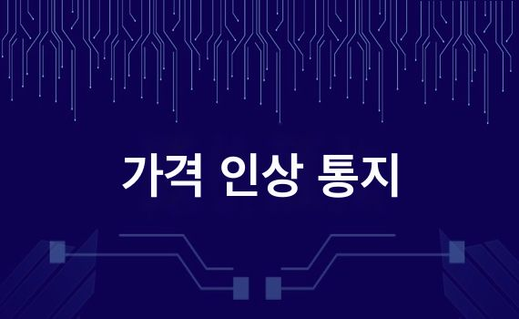
곳곳에서 '인상' 소식: 4월 반도체 산업체인 일제 가격 인상, 비용과 수급 압박2026-04-084월 1일부터 가격 조정 공문이 잇따라 효력을 냈습니다. AI가 부른 슈퍼사이클과 상류 비용 상승의 협공 속에 메모리, MCU 같은 핵심 부품부터 파운드리, 패키징·테스트, 수동소자, 커넥터까지 줄줄이… '움직이는 것'에서 '쓸 수 있는 것'으로: 휴머노이드 로봇 산업화 가속의 두 신호2026-03-30최근 중국 휴머노이드 로봇·체화지능 분야에서 상징적 진전이 두 가지 있었습니다. 첫 국가급 체화지능 오픈소스 데이터셋 커뮤니티 출범과 선도기업 유니트리의 IPO 절차 착수입니다.
'움직이는 것'에서 '쓸 수 있는 것'으로: 휴머노이드 로봇 산업화 가속의 두 신호2026-03-30최근 중국 휴머노이드 로봇·체화지능 분야에서 상징적 진전이 두 가지 있었습니다. 첫 국가급 체화지능 오픈소스 데이터셋 커뮤니티 출범과 선도기업 유니트리의 IPO 절차 착수입니다.
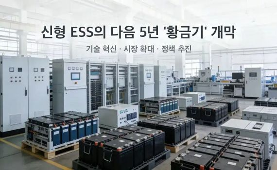
'신형 ESS 발전' 정부 업무보고에 첫 등장, 국가 6대 신흥 지주산업으로 격상2026-03-262026년 전국 양회 직후 ESS 업계에 역사적 순간이 찾아왔습니다. '신형 ESS 발전'이 처음으로 독립 문구로 정부 업무보고에 실렸고 국가 6대 신흥 지주산업에 공식 포함됐습니다. ESS가 '신에너지 부속'의 시대를 완전히 벗어났다는 뜻입니다…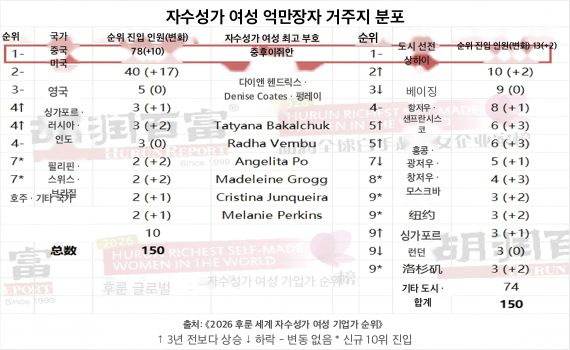
여성의 힘: 선전, 세계 자수성가 여성 기업가 순위 연속 1위2026-03-24후룬연구원의 《2026 후룬 세계 자수성가 여성 기업가 순위》에 따르면 20개국 150명의 자수성가 여성 억만장자 가운데 중국이 78명으로 세계 1위입니다. 생산액 350억, 항로 310개, 이착륙장 1,284곳: 선전 저고도 경제 성적표2026-03-1814차 5개년 계획 이후 선전은 개혁과 혁신을 앞세워 '저고도 경제 제1도시'를 향해 달려 왔습니다. 최신 자료에 따르면 2025년 선전 저고도 경제·우주항공 산업 클러스터의 부가가치는 350.61억 위안으로 전년보다 31% 늘었습니다.
생산액 350억, 항로 310개, 이착륙장 1,284곳: 선전 저고도 경제 성적표2026-03-1814차 5개년 계획 이후 선전은 개혁과 혁신을 앞세워 '저고도 경제 제1도시'를 향해 달려 왔습니다. 최신 자료에 따르면 2025년 선전 저고도 경제·우주항공 산업 클러스터의 부가가치는 350.61억 위안으로 전년보다 31% 늘었습니다.
 선전, 'AI+제조' 행동계획 발표: AI로 첨단 제조업 강화2026-03-16최근 선전이 《선전시 'AI+' 첨단 제조업 행동계획(2026~2027년)》을 발표했습니다. '1개 기지, 1개 센터, 1개 연맹, 100개 현장, 다수 응용'을 축으로 AI 도입을 앞당긴다는 내용입니다…
선전, 'AI+제조' 행동계획 발표: AI로 첨단 제조업 강화2026-03-16최근 선전이 《선전시 'AI+' 첨단 제조업 행동계획(2026~2027년)》을 발표했습니다. '1개 기지, 1개 센터, 1개 연맹, 100개 현장, 다수 응용'을 축으로 AI 도입을 앞당긴다는 내용입니다…
 머리카락보다 가늘고 강철보다 10배 강하다: 중국 T1200 극한 소재 세계 첫 공개2026-03-13중국이 자체 개발한 T1200급 초고강도 탄소섬유가 세계 최초로 공개됐습니다. 새로운 소재의 탄생이자 핵심 소재 분야의 큰 돌파구입니다.
머리카락보다 가늘고 강철보다 10배 강하다: 중국 T1200 극한 소재 세계 첫 공개2026-03-13중국이 자체 개발한 T1200급 초고강도 탄소섬유가 세계 최초로 공개됐습니다. 새로운 소재의 탄생이자 핵심 소재 분야의 큰 돌파구입니다.
 '랍스터 키우기'에서 '랍스터 활용'으로: 3E 참가사 류롄 스마트의 OpenClaw 활용법2026-03-11GitHub 스타 27만 개를 넘겨 Linux와 React를 차례로 제치고 역대 가장 빠르게 성장한 오픈소스 프로젝트가 됐습니다. 곧 열릴 고교회 3E 아시아 소비자 전자전에서는 이 기술이 개발자 세계를 넘어 산업 깊숙이 들어가는 모습을 볼 수 있습니다…
'랍스터 키우기'에서 '랍스터 활용'으로: 3E 참가사 류롄 스마트의 OpenClaw 활용법2026-03-11GitHub 스타 27만 개를 넘겨 Linux와 React를 차례로 제치고 역대 가장 빠르게 성장한 오픈소스 프로젝트가 됐습니다. 곧 열릴 고교회 3E 아시아 소비자 전자전에서는 이 기술이 개발자 세계를 넘어 산업 깊숙이 들어가는 모습을 볼 수 있습니다…
 자본금 1억, 지분 57%: 중국통신신호(CRSC)가 대만구에 펼치는 저고도 전략은?2026-03-06저고도 경제는 신질 생산력의 중요한 성장축으로 전례 없는 기회를 맞고 있습니다. 톈옌차 자료에 따르면 2월 13일 완취 저고도 연구원(광둥)이 정식 설립됐습니다…
자본금 1억, 지분 57%: 중국통신신호(CRSC)가 대만구에 펼치는 저고도 전략은?2026-03-06저고도 경제는 신질 생산력의 중요한 성장축으로 전례 없는 기회를 맞고 있습니다. 톈옌차 자료에 따르면 2월 13일 완취 저고도 연구원(광둥)이 정식 설립됐습니다…
 600명이 설에도 귀향하지 않은 이유, 연말 '60회 발사': 하이난 상업우주 발사장의 질주2026-03-03중국 최남단 해안 우주도시 하이난 원창. 2026년 설을 맞아 집집마다 단란한 시간을 보낼 때, 중국 첫 상업우주 발사장은 시간과 경주를 벌였습니다. 타워크레인과 용접 작업은 멈추지 않았습니다…
600명이 설에도 귀향하지 않은 이유, 연말 '60회 발사': 하이난 상업우주 발사장의 질주2026-03-03중국 최남단 해안 우주도시 하이난 원창. 2026년 설을 맞아 집집마다 단란한 시간을 보낼 때, 중국 첫 상업우주 발사장은 시간과 경주를 벌였습니다. 타워크레인과 용접 작업은 멈추지 않았습니다…
 춘완 무대에 다시 오른 휴머노이드 로봇: 고교회 아시아 로봇 산업체인전이 지켜본 중국 로봇 산업의 도약2026-02-27올해 설에 휴머노이드 로봇이 다시 CCTV 춘완 무대에 올라 화제가 됐습니다. 안정된 걸음, 매끄러운 동작, 자연스러운 상호작용으로 중국 AI와 로봇 기술의 최신 성과를 보여 줬습니다…
춘완 무대에 다시 오른 휴머노이드 로봇: 고교회 아시아 로봇 산업체인전이 지켜본 중국 로봇 산업의 도약2026-02-27올해 설에 휴머노이드 로봇이 다시 CCTV 춘완 무대에 올라 화제가 됐습니다. 안정된 걸음, 매끄러운 동작, 자연스러운 상호작용으로 중국 AI와 로봇 기술의 최신 성과를 보여 줬습니다…
 눈만 깜빡이면 세뱃돈 입금: AI 안경으로 느끼는 설날의 기술2026-02-112026년 설을 앞두고 '오복 모으기'가 휴대전화 조준에서 '눈으로 스캔'으로 바뀌며 AI 안경이 전통 풍습을 바꾸고 있습니다. 최근 알리페이가 AI 안경 기반 복(福) 스캔 기능을 내놓아 렌즈로 '복' 자나 관련 그림을 보기만 하면…
눈만 깜빡이면 세뱃돈 입금: AI 안경으로 느끼는 설날의 기술2026-02-112026년 설을 앞두고 '오복 모으기'가 휴대전화 조준에서 '눈으로 스캔'으로 바뀌며 AI 안경이 전통 풍습을 바꾸고 있습니다. 최근 알리페이가 AI 안경 기반 복(福) 스캔 기능을 내놓아 렌즈로 '복' 자나 관련 그림을 보기만 하면…
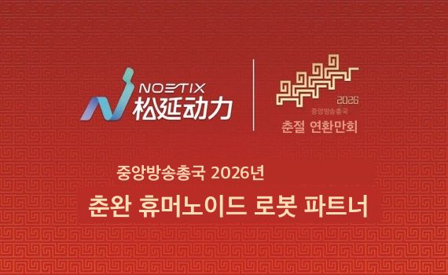
가장 'AI'다운 설날: 춘완에 오른 휴머노이드 로봇과 대모델 입구 전쟁2026-02-092026년 설은 AI와 로봇 산업의 전 국민 '스트레스 테스트'가 되고 있습니다. 휴머노이드 로봇이 처음 군집으로 춘완 무대에 올랐고, AI 대모델은 새해 인사, 세뱃돈, 소셜 현장에 스며들며 기술이 실험실에서 거실로 들어왔습니다… 중국 첫 GDP 1조 위안 시 관할구, 난산에는 엔비디아만 있는 것이 아니다2026-01-301월 28일 엔비디아 젠슨 황 CEO가 선전시 난산구 웨하이 거리의 엔비디아 반도체(선전)를 찾아 큰 관심을 모았습니다. 3년 연속 중국의 연말연시에 방문한 것입니다…
중국 첫 GDP 1조 위안 시 관할구, 난산에는 엔비디아만 있는 것이 아니다2026-01-301월 28일 엔비디아 젠슨 황 CEO가 선전시 난산구 웨하이 거리의 엔비디아 반도체(선전)를 찾아 큰 관심을 모았습니다. 3년 연속 중국의 연말연시에 방문한 것입니다…
 고교회, 선전정보직업기술대학을 찾다: 20년 동행으로 일군 과학기술 혁신의 터전2026-01-292026년 1월 22일 고교회 캠퍼스 라이브 팀이 선전정보직업기술대학을 찾아 '캠퍼스 탐방'을 진행했습니다. 2만 명 넘게 시청하고 좋아요 4만 개를 넘겼으며 최고 동시 접속자는 2,000명을 넘었습니다…
고교회, 선전정보직업기술대학을 찾다: 20년 동행으로 일군 과학기술 혁신의 터전2026-01-292026년 1월 22일 고교회 캠퍼스 라이브 팀이 선전정보직업기술대학을 찾아 '캠퍼스 탐방'을 진행했습니다. 2만 명 넘게 시청하고 좋아요 4만 개를 넘겼으며 최고 동시 접속자는 2,000명을 넘었습니다…